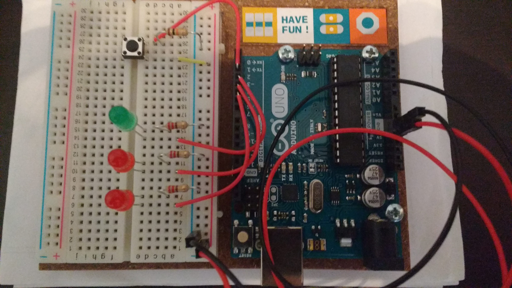

Arduino¶
Proyectos de arduino starter kit¶
Información completa de los proyectos en la página oficial
Proyecto 2: spaceship interface.¶
Este proyecto consiste en configurar las clavijas 3,4 y 5 como salidas que encenderán los leds y la clavija 2 como entrada que recogerá la señal del pulsador.
Ha continuación se muestra el código:
int switchState = 0;
//configures the digital pins
void setup(){
pinMode(3,OUTPUT);
pinMode(4,OUTPUT);
pinMode(5,OUTPUT);
pinMode(2,INPUT);
}
//Checks the voltageo of the digital input and chooses the pin for voltage ( pin 2 )
void loop(){
switchState = digitalRead(2);
if(switchState == LOW){
//Button is not pressed
digitalWrite(3,HIGH); //Green LED
digitalWrite(4,LOW); //Red LED
digitalWrite(5,LOW); //red LED
}
else { //the button is pressed
digitalWrite(3,LOW);
digitalWrite(4,LOW);
digitalWrite(5,HIGH);
delay(250); //wait for a quarter second
//toggle the LEDs
digitalWrite(4,HIGH);
digitalWrite(5,LOW);
delay(250); //wait for a quarter second
}
} //go back to the beginning of the loop